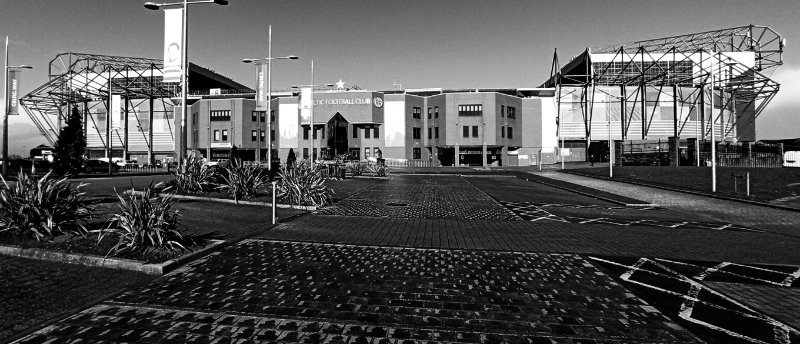
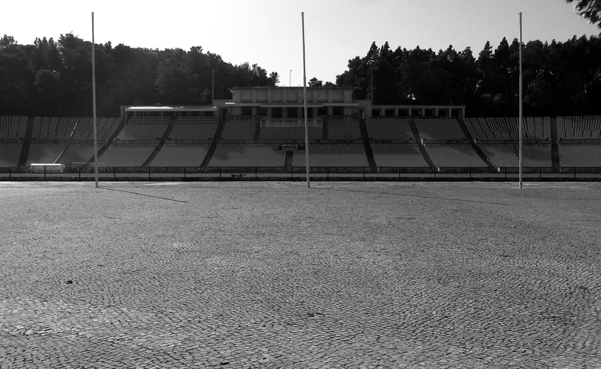
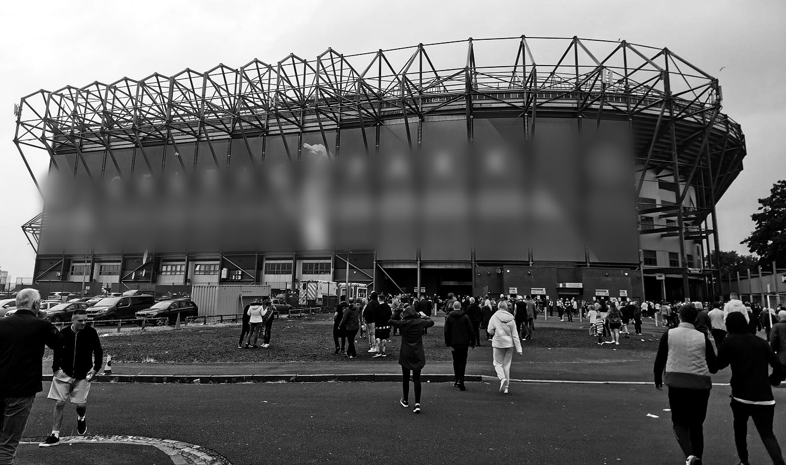

11 TITULARES
MAPA: RECREACIÓN
CHINCHETAS DE EJEMPLO, NO UBICACIÓN EXACTA
CHINCHETAS DE EJEMPLO, NO UBICACIÓN EXACTA

CELTIC PARK · THOMAS NUGENT, CC BY-SA 2.0COPA: DIBUJO

ESTÁDIO NACIONAL DO JAMOR, LISBOA (FOTO ACTUAL) · TAGIDO, DOMINIO PÚBLICO
FICHA · CELTIC, 1965-1978
JOCK STEIN EN 1971 · FOTO: ANEFO /
NATIONAAL ARCHIEF, CC0 · POSTAL: RECREACIÓN
NATIONAAL ARCHIEF, CC0 · POSTAL: RECREACIÓN
FINAL · 25/05/1967
MARCADOR: RECREACIÓN
CELTIC
–
INTER
PENALTI
0'
CELTIC
primero de Gran Bretaña
25 DE MAYO DE 1967 · SELLO: RECREACIÓN

CELTIC PARK, GLASGOW · FOTO: CROWSUS, CC BY-SA 4.0 (MODIFICADA)FOTOS: TAGIDO (DOMINIO PÚBLICO) · ANEFO (CC0)
THOMAS NUGENT (CC BY-SA 2.0) · CROWSUS (CC BY-SA 4.0)
VÍA WIKIMEDIA COMMONS · COPA, MARCADOR Y MAPA: RECREACIÓN
THOMAS NUGENT (CC BY-SA 2.0) · CROWSUS (CC BY-SA 4.0)
VÍA WIKIMEDIA COMMONS · COPA, MARCADOR Y MAPA: RECREACIÓN